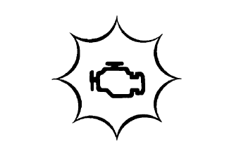
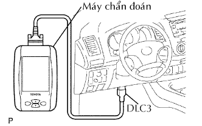
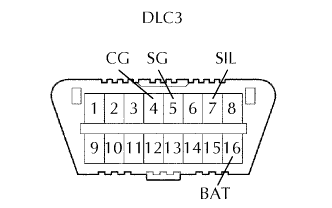

HỆ THỐNG SFI > HỆ THỐNG CHẨN ĐOÁN |
| MÔ TẢ CHO M-OBD |
|   |
| CHẾ ĐỘ THƯỜNG VÀ CHẾ ĐỘ KIỂM TRA |
| THUẬT TOÁN PHÁT HIỆN 2 HÀNH TRÌNH |
| DỮ LIỆU LƯU TỨC THỜI |
| KIỂM TRA GIẮC DLC3 |
|  |
| Ký hiệu (Số cực) | Mô tả cực | Điều kiện | Điều kiện tiêu chuẩn |
| SIL (7) - SG (5) | Đường truyền "+" | Trong khi truyền. | Tạo xung |
| CG (4) - Mát thân xe | Mát thân xe | Luôn luôn | Dưới 1 Ω |
| SG (5) - Mát thân xe | Tiếp mát tín hiệu | Luôn luôn | Dưới 1 Ω |
| BAT (16) - Mát thân xe | Cực dương ắc quy | Luôn luôn | 9 đến 14 V |
| KIỂM TRA ĐIỆN ÁP ẮC QUY |
| KIỂM TRA ĐÈN MIL |
Đèn MIL sáng lên khi bật khoá điện ON và động cơ không nổ máy.
Khi động cơ nổ máy, MIL phải tắt đi. Nếu đèn vẫn sáng, thì hệ thống chẩn đoán đã phát hiện được một hư hỏng hay điều bất thường trong hệ thống.